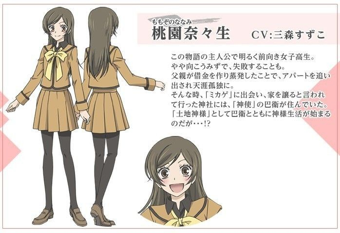
Nanami es la protagonista principal de Kamisama Hajimemashita. Al inicio de la historia, se nos presenta como una chica común cuya vida da un giro repentino: su padre desaparece por deudas de juego, dejándola sola y sin hogar. Sin embargo, su destino cambia cuando conoce a Mikage, un misterioso hombre que le ofrece refugio en su templo. Sin saberlo, Nanami hereda su poder y se convierte en la nueva diosa de la tierra.
A pesar de no tener experiencia en el mundo espiritual, Nanami demuestra tener un carácter fuerte, una valentía y una empatía que le permite ganarse el respeto de yōkais, deidades y humanos por igual. Aunque al principio se siente abrumada por sus responsabilidades, su crecimiento personal la convierte en una figura clave para unir ambos mundos.
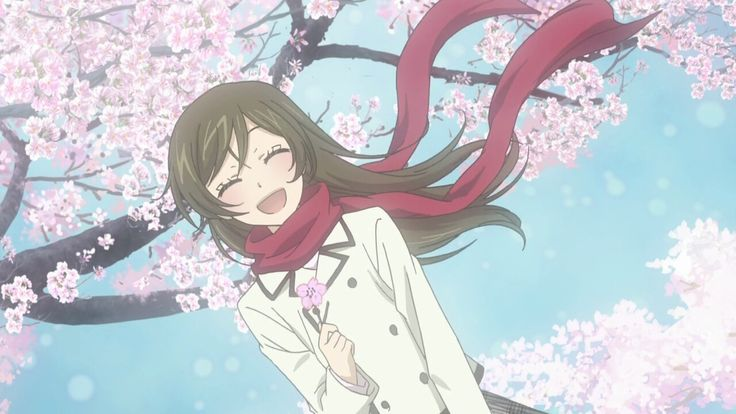
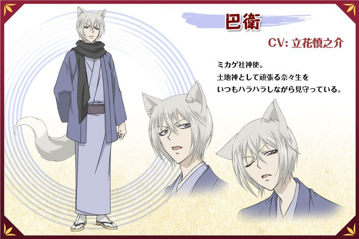
Tomoe es el coprotagonista de Kamisama Hajimemashita y un poderoso yōkai zorro (kitsune), conocido por ser el antiguo familiar del dios Mikage. Durante veinte años, permaneció en el templo aguardando el regreso de su maestro, hasta que inesperadamente aparece Nanami, una humana que hereda el rol de deidad de la Tierra. Inicialmente, Tomoe se niega a aceptarla como su nueva ama, pero tras un beso que sella un contrato espiritual, se ve obligado a convertirse en su guardián.
A lo largo de la historia, Tomoe y Nanami desarrollan un lazo profundo que va más allá del deber. De ser un espíritu hostil y solitario, Tomoe se transforma en un ser leal, protector y emocionalmente complejo. Su relación con Nanami evoluciona hasta convertirse en el eje emocional de la serie, explorando el amor entre un yōkai y una humana con sensibilidad y conflicto.
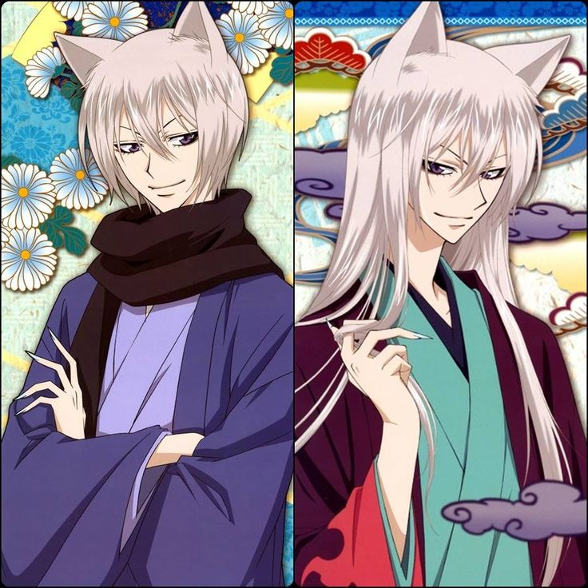
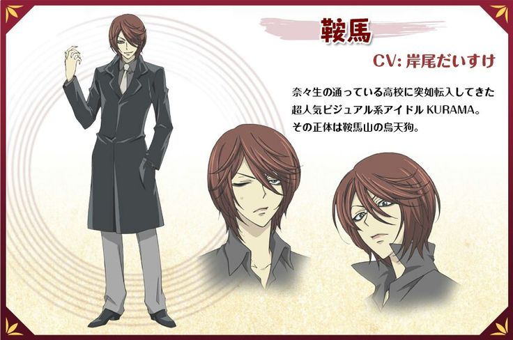
Kurama es un idol juvenil muy popular, es conocido por su estilo gótico y su maquillaje llamativo, en la serie sus fans lo suelen describir como un ‘ángel caído’. Un día, es transferido a la escuela de Nanami, por lo que ella asiste a la escuela para poder conocerlo mejor, sin embargo, al interactuar con él se decepciona de su actitud arrogante y engreída.
Luego se nos revela que Kurama no es un humano, sino un demonio cuervo que oculta su identidad siendo un idol. Su verdadero objetivo era comerse el corazón de Nanami y de esa forma convertirse en el nuevo Dios de la Tierra. Sin embargo, Tomoe lo detiene con intenciones de matarlo, pero Nanami evita que lo haga, de esa forma, Kurama decide abandonar su objetivo y ser el amigo de Nanami.
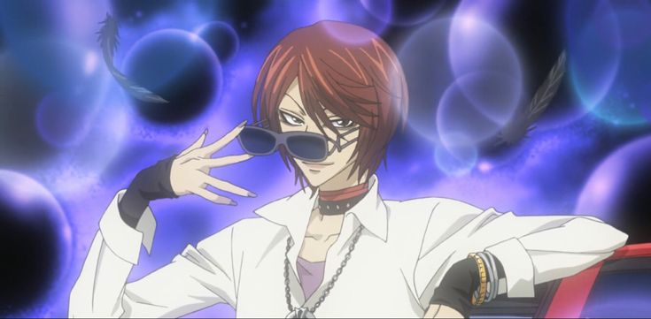
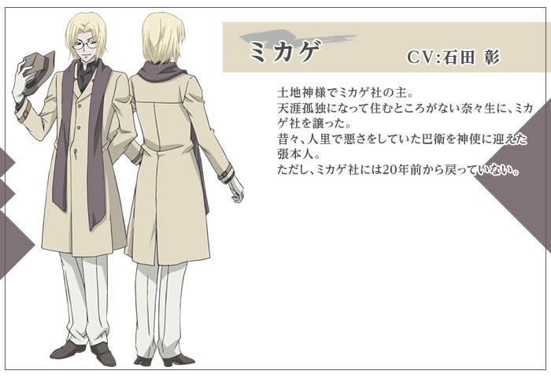
Mikage es el anterior dios del templo y quien le otorga a Nanami su título de Dios. Nanami lo conoce cuando lo ayuda a escapar de un perro que le estaba ladrando (ya que Mikage le tiene miedo a los perros, y estaba arriba de un árbol), y en agradecimiento, él le entrega su ‘marca’ con un beso en la frente y un mapa mal hecho de su hogar, que termina siendo el templo.
Aunque no aparece constantemente en la historia, Mikage cumple un rol importante en la historia. Su sabiduría y preocupación por Tomoe lo motivan a elegir a Nanami como su sucesora.
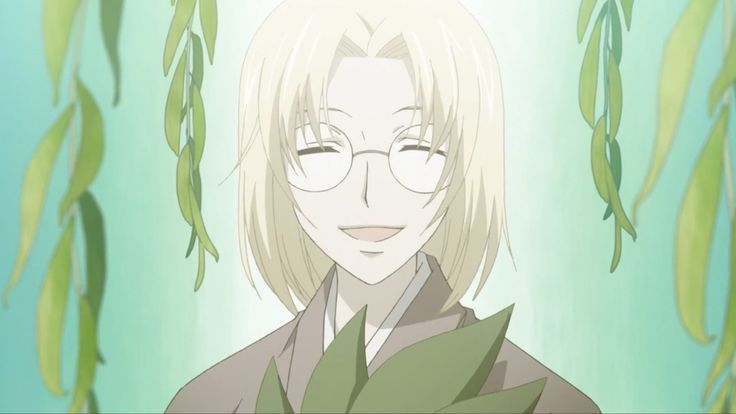
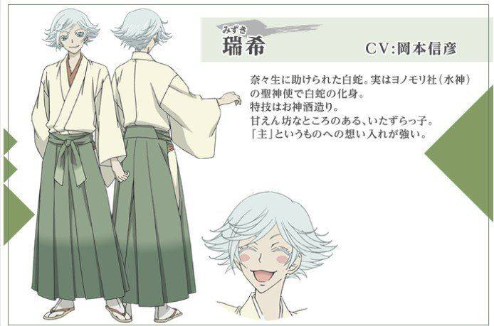
Mizuki es el espíritu de una serpiente blanca que servía devotamente a la diosa del santuario Yonomori. Tras la desaparición de su diosa, queda hundido en la soledad y la tristeza, hasta que conoce a Nanami, quien lo ayuda a salir de su escuela cuando él estaba en su forma de serpiente.
Al inicio, Mizuki intenta convertir a Nanami en su nueva diosa, pero luego desarrolla un afecto genuino hacia ella. Aunque su amor no es correspondido románticamente, él se convierte en su segundo familiar y uno de sus protectores más fieles.
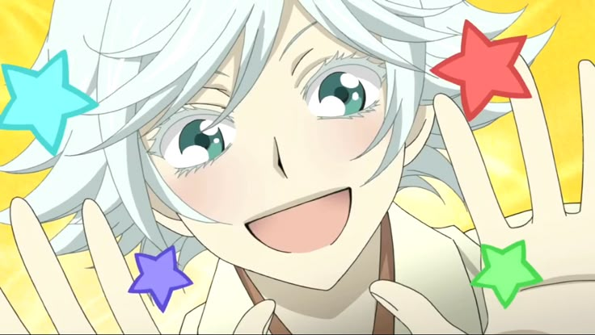
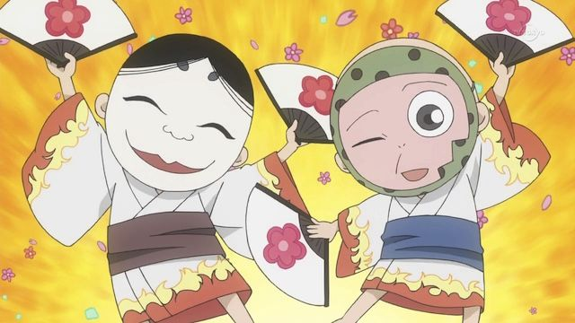
Onikiri y Kotetsu son dos pequeños espíritus domésticos (shikigami) que habitan y sirven en el Templo Mikage. Aunque físicamente diminutos y de apariencia peculiar —ambos usan máscaras tradicionales japonesas—, su rol en la historia es más significativo de lo que parece. Representan el alma del templo: la constancia, la rutina, y el vínculo entre la tradición y el presente.
Ambos son profundamente leales a Mikage y, aunque al principio son un poco escépticos con Nanami, rápidamente desarrollan un cariño sincero por ella. Se ocupan de las tareas del santuario, asisten en rituales, y ofrecen apoyo emocional y cómico en momentos clave. También funcionan como un puente de guía práctica entre el mundo humano y espiritual, explicando reglas, costumbres y rituales a la nueva diosa.
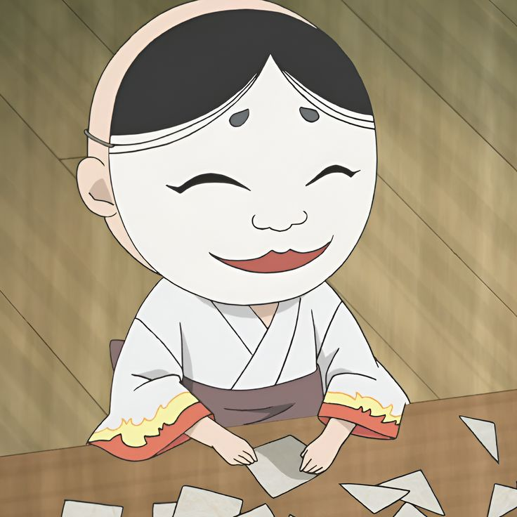
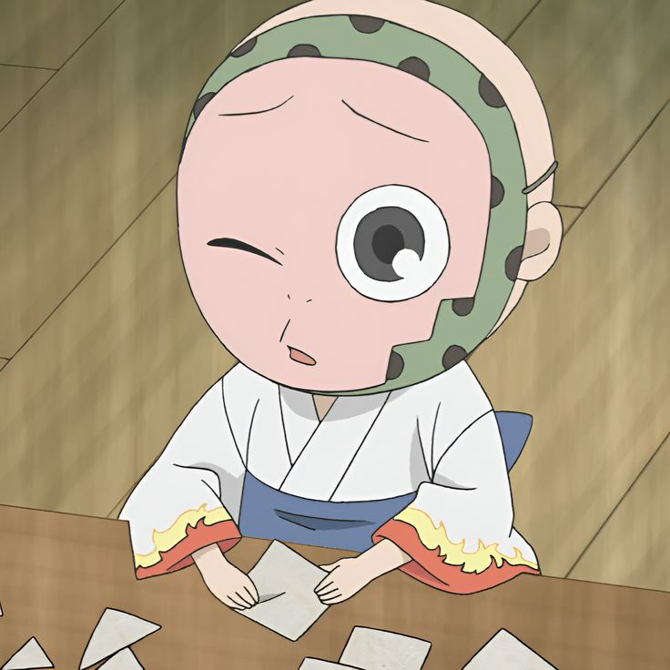
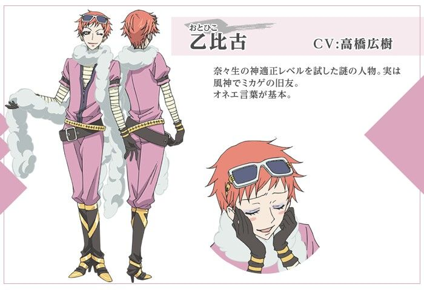
Otohiko es una deidad andrógina del viento y uno de los personajes más excéntricos de la serie. Al principio, duda de las habilidades de Nanami como diosa, pero con el tiempo empieza a reconocer su valentía y determinación. Aunque su comportamiento puede parecer superficial y dramático, es un personaje que representa el mundo de las deidades más antiguas y conservadoras.
Otohiko aporta una mezcla de humor y tensión política dentro del mundo espiritual, siendo a la vez un juez y un testigo del crecimiento de Nanami.
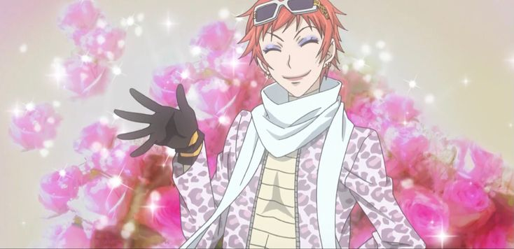
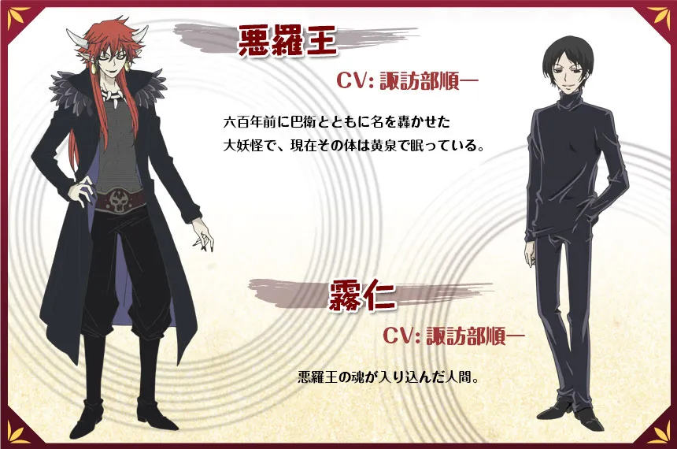
Akura-ou es un poderoso demonio que en el pasado fue aliado de Tomoe durante sus días más oscuros. Frío, despiadado y obsesionado con la destrucción, Akura-ou representa el caos y la brutalidad del mundo yōkai. Tras ser derrotado y encerrado, su alma escapa y toma posesión de un cuerpo humano, lo que inicia una serie de eventos que conectan su destino con el de Nanami.
A pesar de su naturaleza violenta, Akura-ou es un personaje trágico. Su desprecio por los humanos se ve desafiado por experiencias que despiertan en él emociones contradictorias, dando lugar a un conflicto interno que lo vuelve más complejo de lo que parece.
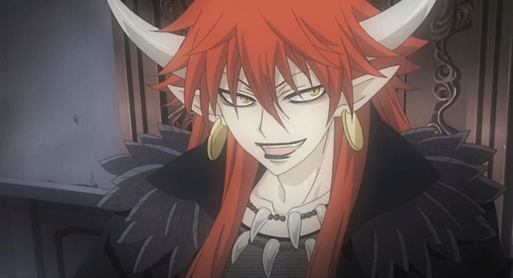
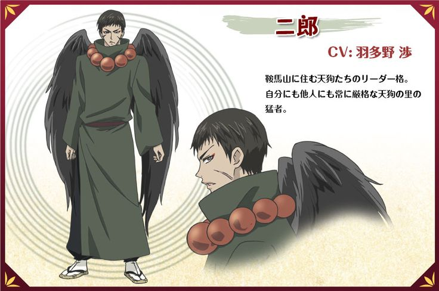
Jirou es el hijo del líder del clan tengu del Monte Kurama. Al principio se muestra rudo, conservador y desconfiado hacia los forasteros, especialmente hacia Nanami. Sin embargo, a medida que avanza la historia, se revela que detrás de su fachada severa hay una persona tímida y con deseos reprimidos de afecto.
Su evolución se da cuando aprende a abrirse emocionalmente y a reconocer el valor de los sentimientos y el cambio. Su breve romance con Nanami es significativo, ya que le permite experimentar por primera vez la cercanía emocional con otra persona fuera de su mundo.
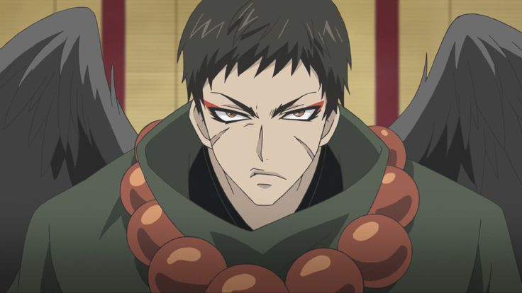